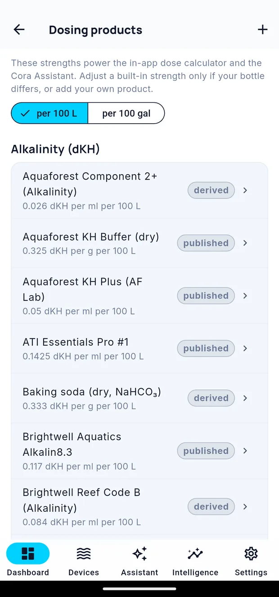

Dosing
Cora can only do dosing maths if it knows how strong your products are. Set that up once and everything downstream — the calculator, consumption tracking, and what Cora tells you about your dosing — becomes real numbers rather than guesses.
Settings → Dosing Products.

The product library
Cora ships with a library of common products. Search for yours and add it — the strength comes with it.
Each product records how much it raises a parameter per millilitre (or per gram, for dry products) in a fixed volume of water. That is the number that turns "5 ml" into "+0.2 dKH in your tank".
Products can carry alkalinity, calcium, magnesium, nitrate or phosphate values — a two-part carries one each, a balanced product several.
Adding your own
If your product is not in the library, add it as a custom one and enter its strength. The manufacturer's label almost always states it — "1 ml per 100 litres raises alkalinity by 0.1 dKH", or similar.
The dose calculator
With products set up, Cora can tell you how much to dose to move a parameter from where it is to where you want it — using your tank's actual volume from its profile.
That is also why the volume you entered at setup matters. A tank whose stated volume is 20% out gives dose figures 20% out.
Consumption
Once Cora can see both your doses and your readings, it can work out what your tank is actually consuming, and tell you when that changes. A tank whose alkalinity demand climbs is usually a tank that is growing; one whose demand drops suddenly is usually a tank with a problem.
Dosing equipment
If you have a connected dosing unit, its heads appear as devices with their own readings — what each head has left, and what it has been dosing. See Connecting your gear.
Written for Cora Max 0.28.28 and Cora Mobile 0.5.52.
Still stuck? Email cora@coraiq.tech and we'll help.